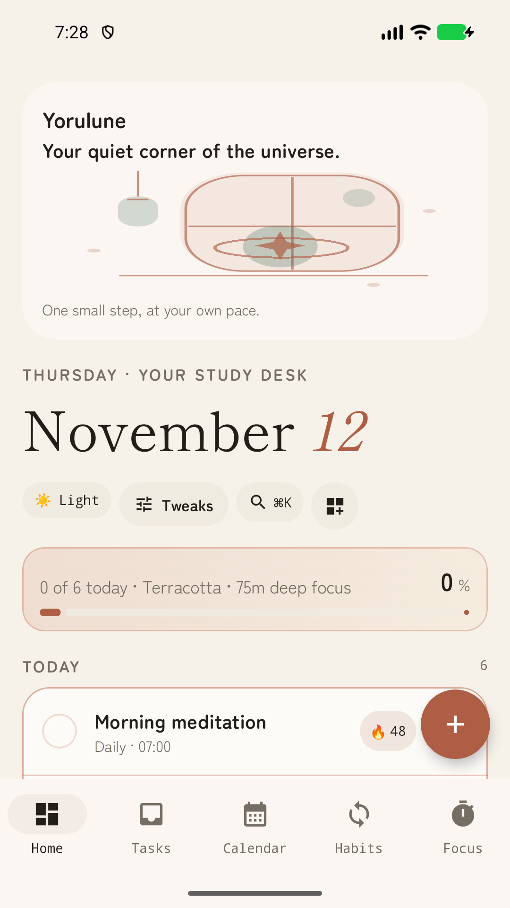
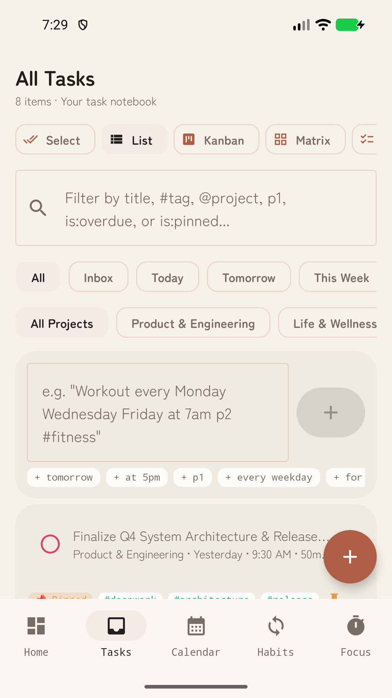
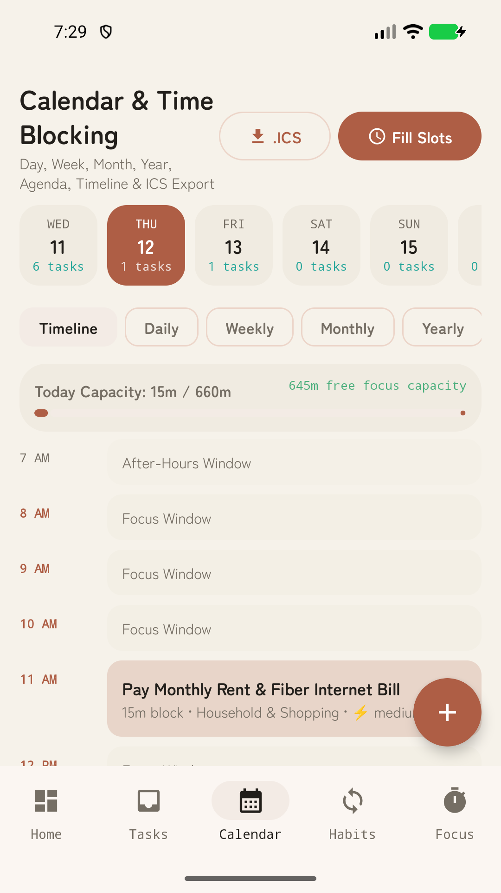
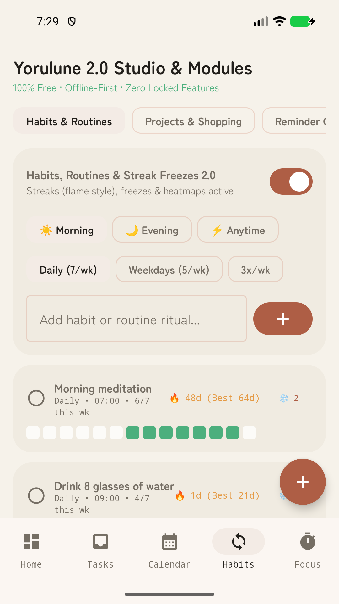
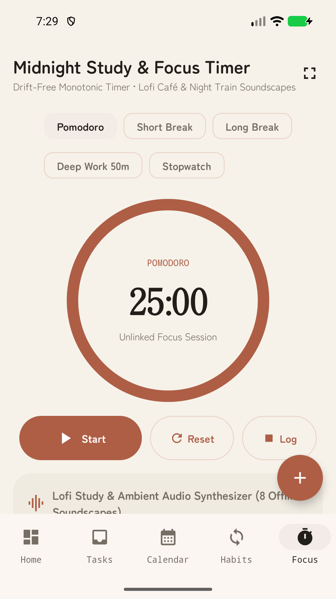
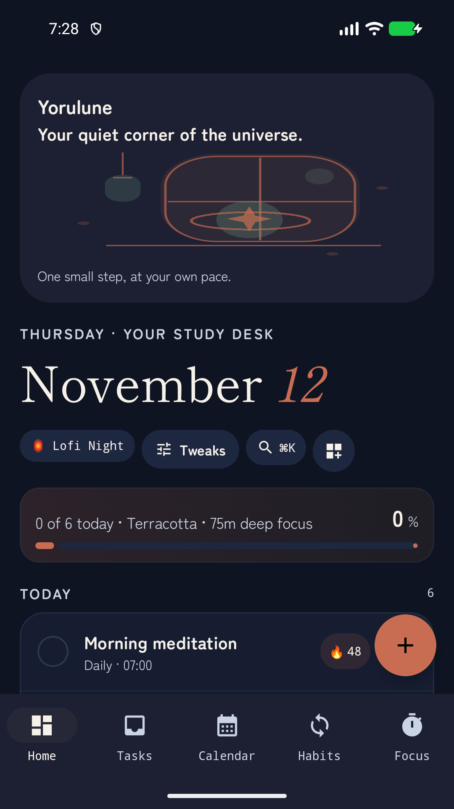
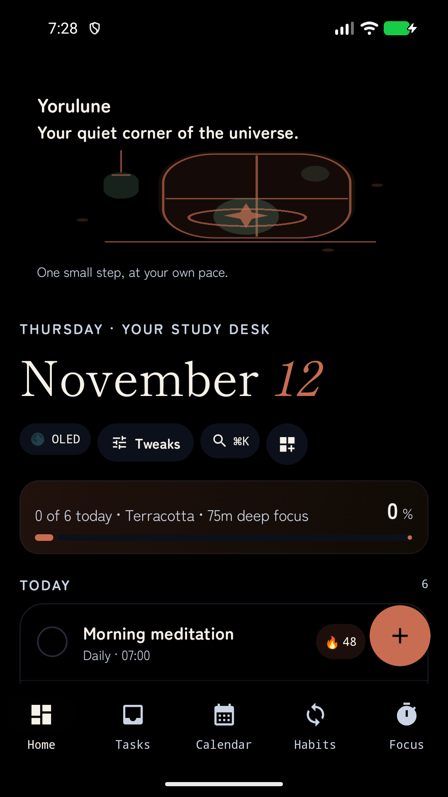

Disposable emulator, fixture/demo records, 11–12 November 2026. These are screenshots of the compiled app. Names remain provisional; production status BLOCKED.
Full configuration and secondary-screen contact sheet






